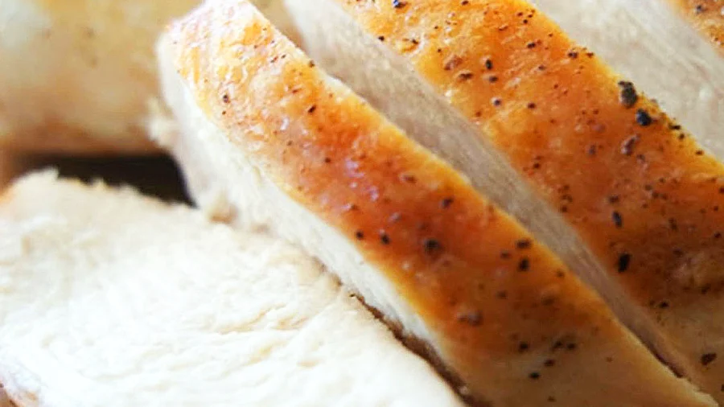

SO MUCH PROTEIN IN THIS CHICKEN BREAST

It's chicken breast. It's simple to make, it's full of protein, it's good for you.
If someone doubts that taste can't be described in a HTML only webpage, link them here. Chicken breast with only salt and pepper tastes exactly like HTML with no CSS or JS.
ingredients:
- 2 chicken breasts, preferably organic
- 1/2 teaspoon salt
- 1/4 teaspoon fresh ground black pepper
- oil to taste
Preparation:
- Preheat oven to 350°F.
- Rinse and thoroughly dry chicken.
- Place salt and pepper in a small dish.
- Sprinkle the salt and pepper mix over the chicken to create a fine, even layer on both sides. You will likely not need the full amount of salt and pepper, especially if your breasts are smaller than 8oz.
- If you use oil, heat it until you can feel heat on your arm when holding over the skillet. Add chicken to hot pan and do not move from the initial spot.
- Cook for 5-7 minutes. Check for adequate browning before flipping.